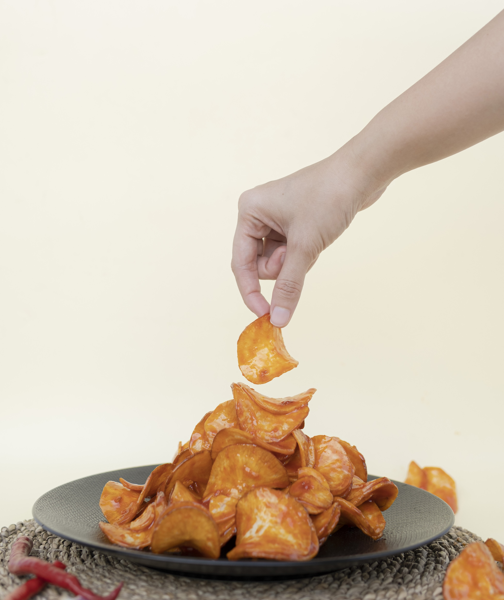

Kualitas
Memperhatikan bahan dan proses agar rasa tetap konsisten.
Perjalanan Salsabila dimulai dari kecintaan pada camilan khas Padang dan keinginan untuk membagikan rasa yang dekat dengan rumah.

Kripik Balado Salsabila hadir untuk membawa cita rasa khas Padang ke dalam camilan yang praktis dan menyenangkan. Kami percaya bahwa makanan bukan hanya tentang rasa, tetapi juga tentang kenangan, kebersamaan, dan cerita yang dibawa pulang.
Dengan perhatian pada bahan baku, proses produksi, dan hubungan baik dengan pelanggan, kami terus berusaha menjaga kualitas di setiap kemasan.
Memperhatikan bahan dan proses agar rasa tetap konsisten.
Menjaga karakter balado khas Padang yang kaya dan berani.
Membangun hubungan baik melalui pelayanan yang jujur.